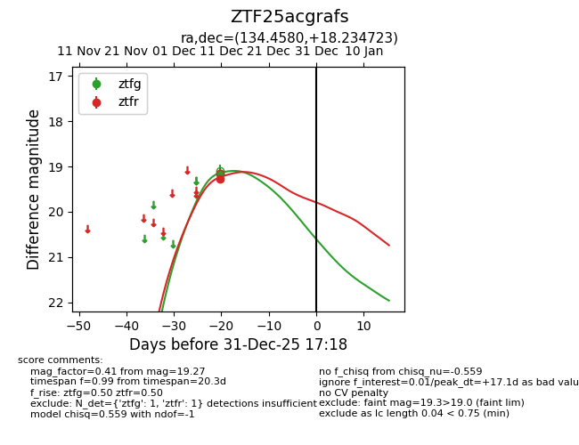
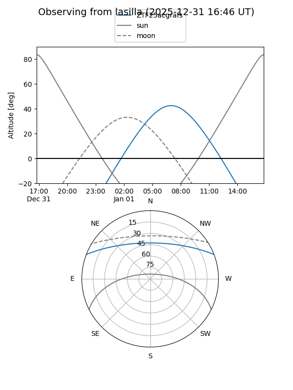
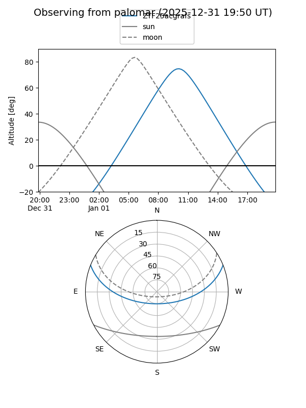

ZTF25acgrafs
Target ZTF25acgrafs at 2026-01-09 12:49
Aliases and brokers:
FINK: link
Lasair: link
ALeRCE: link
alt names
ZTF25acgrafs (ztf,fink_ztf)
Coordinates:
equatorial (ra, dec) = 134.4580,+18.23472
equatorial (HMS+DMS) = 08:57:49.91,+18:14:05.00
galactic (l, b) = (209.2847,+35.84439)
Flags:
Photometry:
last ztfg=19.17, ztfr=19.27
1 ztfg, 1 ztfr detections
Lightcurve

Visibility


Additional plots